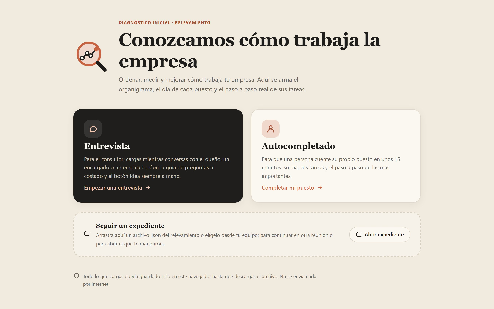
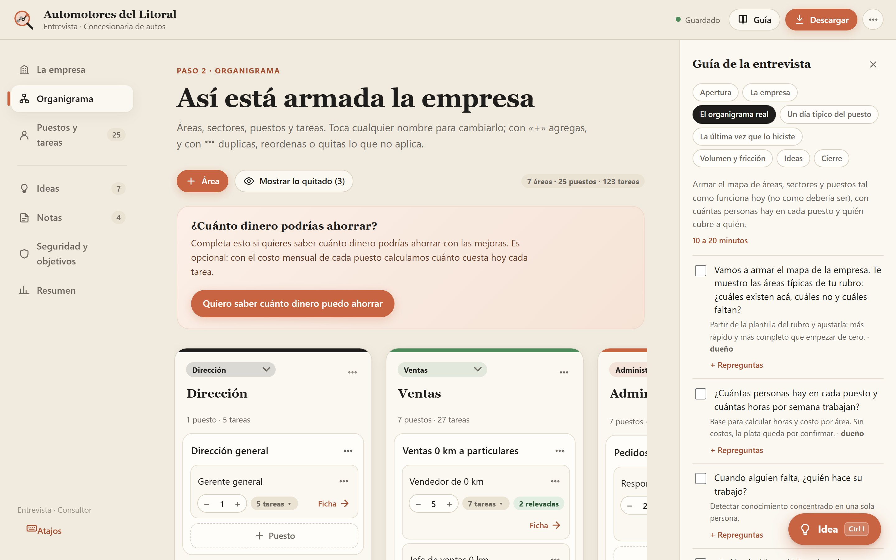
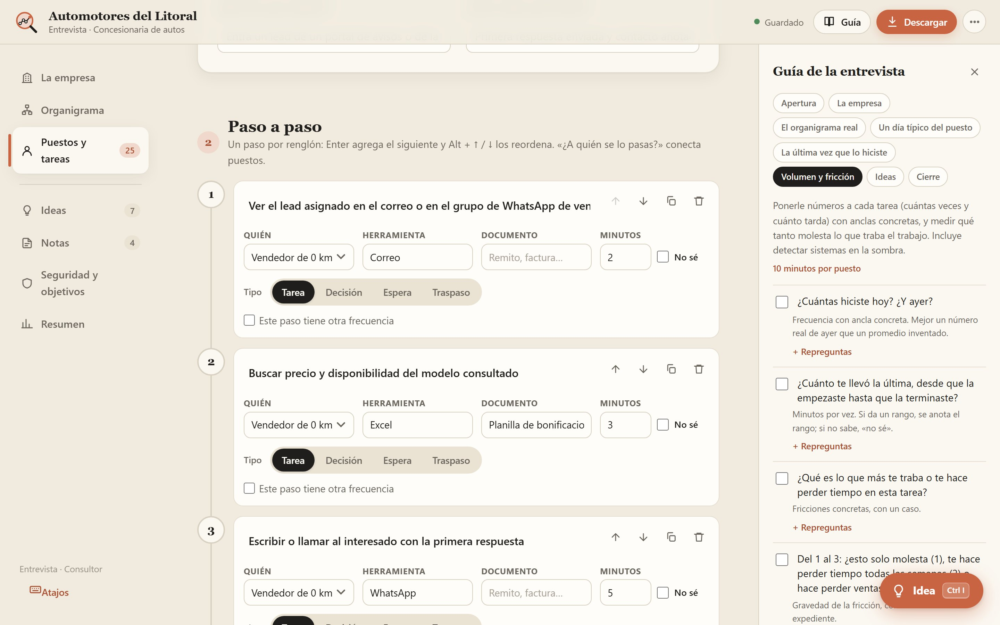
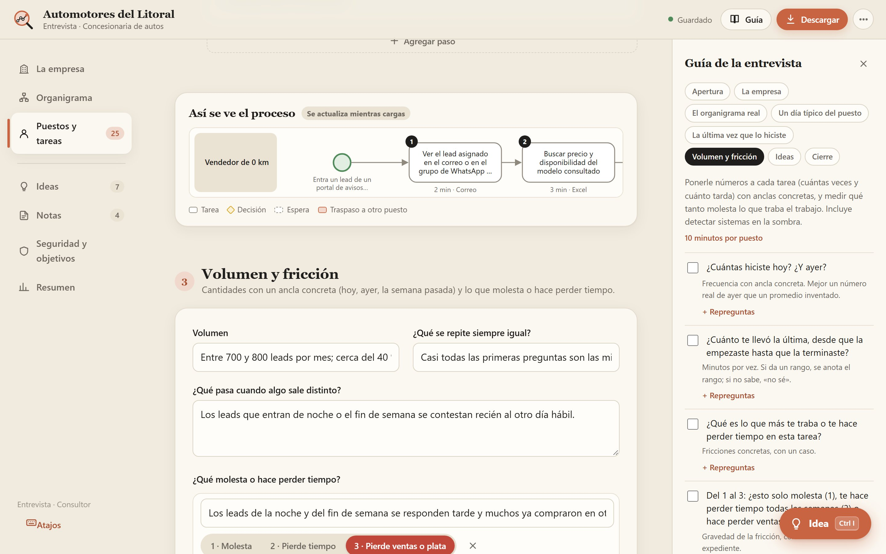
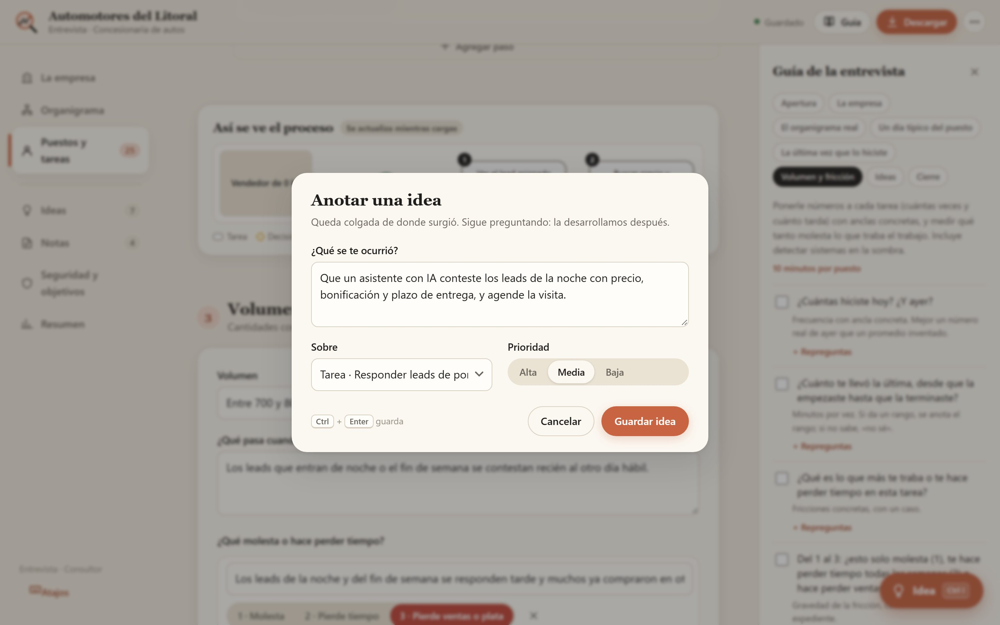
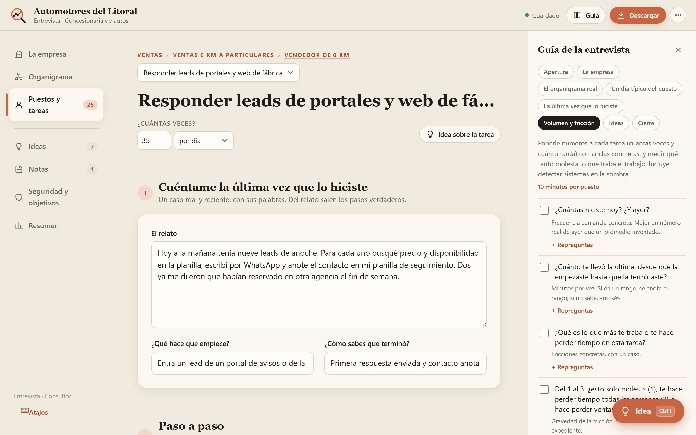
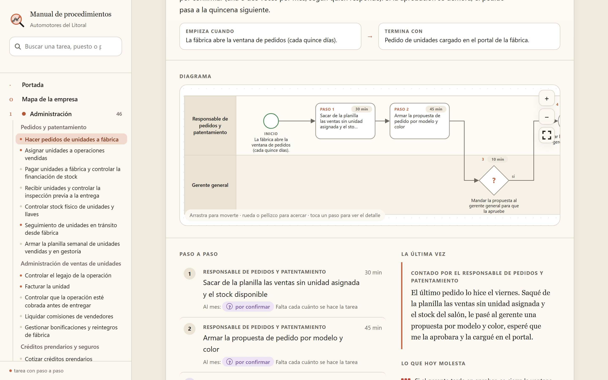
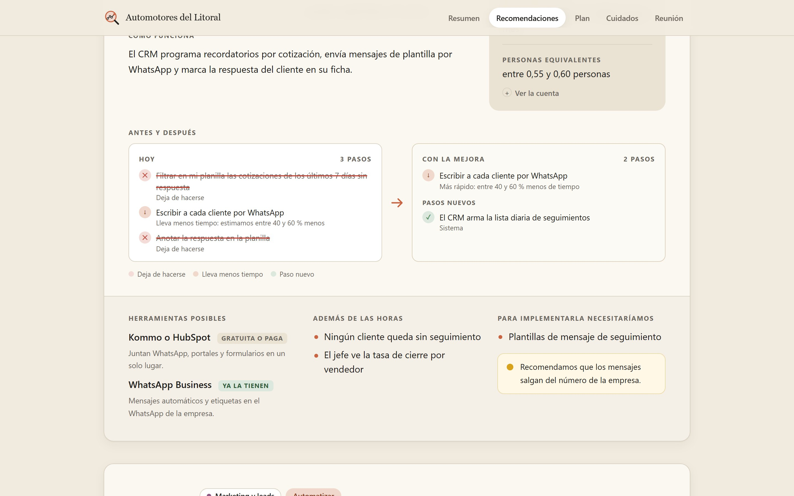
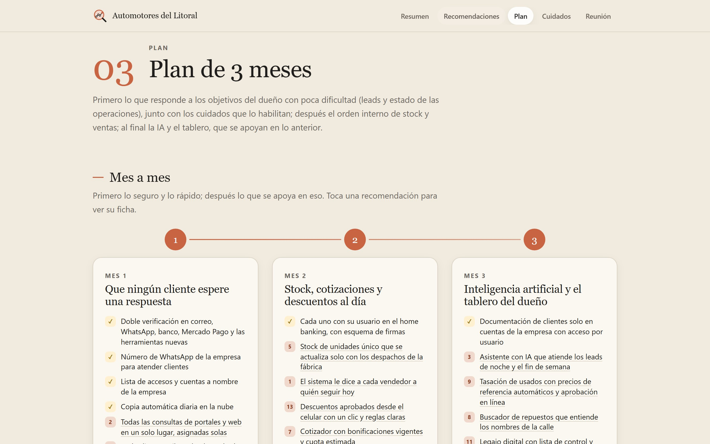

Diagnóstico Inicial
Ver cómo trabaja una empresa de verdad, y qué puede mejorar con tecnología
Un recorrido por el método completo: desde las preguntas hasta el manual de procedimientos y las mejoras con inteligencia artificial, con dos empresas de ejemplo.
Antes de empezar
Dos empresas de ejemplo, el método real
Para mostrar todo el proceso armé dos empresas ficticias, una concesionaria de autos y una inmobiliaria, con respuestas genéricas. El método, las herramientas y los informes son los mismos que uso con una empresa real.
El centro no es la herramienta: son las ideas que se me ocurren para cada empresa, respaldadas con inteligencia artificial.
Mientras escucho cómo trabaja cada persona aparecen las oportunidades. Las anoto en el momento, y después la IA me ayuda a convertirlas en recomendaciones concretas, con su ahorro calculado.
El recorrido · tócalo para ir directo
- El punto de partida
- Las preguntas
- Las respuestas
- El manual de procedimientos
- Las mejoras
- Otro rubro
- Más allá del diagnóstico
El punto de partida
Casi ninguna pyme tiene escrito cómo trabaja
Y sin eso, cualquier mejora es a ciegas. Antes de sumar un sistema o una IA hay que ver tres cosas que hoy no se ven.
Lo que se sabe está en la cabeza de las personas
Cómo se arma un pedido, cómo se cobra, a quién se le pasa cada cosa. Si alguien falta o se va, se frena todo.
Nadie mide adónde se va el tiempo
Horas copiando datos entre planillas, buscando información o esperando una aprobación. Como no se ven, no se corrigen.
La tecnología se compra antes de entender el problema
Se paga un sistema y se sigue trabajando igual. El diagnóstico primero ordena, y después recomienda.
El método
Cuatro pasos, una semana, todas las áreas
El diagnóstico no implementa nada todavía: deja a la vista cómo trabaja la empresa hoy, qué conviene cambiar y en qué orden.
Relevamiento
Entrevistas con el dueño, los encargados y los empleados, guiadas por una app propia.
Manual de procedimientos
Organigrama con horas por mes, y cada tarea con su diagrama y su paso a paso.
Mejoras con tecnología
Automatizaciones, IA y mejor uso de lo que ya tienen, con el antes y el después y el ahorro de cada una.
Cuidados y plan
Un chequeo corto de seguridad y un plan de 3 meses, mes por mes.
Paso 1 · Las preguntas
Una app para relevar mientras se conversa
La armé para que nada se pierda en una entrevista.
- Modo entrevista: cargo yo mientras el dueño o un encargado me cuenta, con una guía de preguntas al costado.
- Modo autocompletado: cada empleado recibe el formulario de su puesto y lo completa en unos 15 minutos.
- Arranca con una plantilla del rubro (hay 16) y se ajusta con «+»: áreas, sectores, puestos y tareas. Por ejemplo, varios equipos de ventas.


Paso 1 · Las preguntas
«Cuéntame la última vez que lo hiciste»
Esa pregunta es la clave. Cuando alguien cuenta un caso real y reciente, aparece el paso a paso verdadero, no el que figura en el papel.
- Cada paso queda con quién lo hace, con qué herramienta y cuántos minutos lleva.
- El diagrama del proceso se dibuja solo mientras la persona habla.
- Se registra qué molesta, cuánto se repite y qué pasa cuando algo sale distinto.


El corazón del método
El botón «Idea»
Mientras alguien cuenta cómo trabaja, se me ocurren soluciones. Con una tecla, la idea queda anotada junto a la tarea de donde salió, sin cortar la conversación.
- Después, cada idea se desarrolla con IA: cómo funcionaría, con qué herramientas y cuánto tiempo libera.
- Ninguna se pierde: en el informe, cada idea tiene su respuesta.
- Ese criterio, el de detectar dónde está la oportunidad, es lo que hace diferente cada diagnóstico.

Paso 2 · Las respuestas
Lo que contestó la concesionaria
Tres fuentes sobre la misma empresa: la entrevista con el dueño y los encargados, más lo que completaron por su cuenta un vendedor y el gestor de patentamiento.
- Cuando dos personas cuentan algo distinto, no se elige: se muestran las dos versiones y se aclara en la reunión.
- Las personas aparecen por su puesto, nunca por su nombre.
- Mira las ideas del consultor, arriba de todo, y abre Ventas para ver una tarea relevada completa.
Se abre en esta misma ventana. Para seguir, usa el botón «Volver a la presentación».

Paso 3 · El manual de procedimientos
Lo que casi ninguna empresa tiene
Con las respuestas se arma solo el mapa completo de la empresa. Por sí mismo ya es un producto: sirve para capacitar, delegar y no depender de una persona.
- Cada tarea relevada tiene su diagrama (en el estándar BPMN) y su paso a paso redactado como instrucción.
- Los datos que faltan no se inventan: quedan marcados «por confirmar».

Paso 4 · Las mejoras
Recomendaciones con tecnología, y la cuenta a la vista
Nada de consejos obvios: cada recomendación dice qué se automatiza o qué hace la IA, cómo queda el proceso y cuánto tiempo libera.
- Antes y después del proceso, paso por paso.
- Herramientas posibles, empezando por las que la empresa ya tiene.
- «Ver la cuenta» muestra de dónde sale cada número.

Paso 4 · Cuidados y plan
Qué hacer primero, mes por mes
El informe termina con un orden claro: primero lo que responde a lo que el dueño quiere lograr y es más simple, y después lo que se apoya en eso.
- Antes de empezar, recomendamos: un chequeo corto de seguridad (contraseñas, copias, accesos) en tono de recomendación, no de auditoría.
- Plan de 3 meses: qué se implementa cada mes, qué resultado se ve y qué hace falta.
- Para nuestra reunión: los datos por confirmar, convertidos en una agenda corta.

Otro rubro, el mismo método
La inmobiliaria
Otro negocio y otros problemas: cobranza de alquileres, liquidaciones a propietarios, consultas de portales. El método se adapta a cualquier rubro y a cualquier tamaño.
Más allá del diagnóstico
Lo que viene después: construir las soluciones
El diagnóstico muestra qué hacer. Lo que más me entusiasma es lo que sigue: hacerlo realidad con inteligencia artificial y alta tecnología, a la medida de cada empresa.
Asistentes con IA
Que atienden consultas a cualquier hora, ordenan pedidos o responden con la información de la empresa.
Automatizaciones
Que eliminan la carga repetida: datos que pasan solos entre planillas, sistemas, WhatsApp y correo.
Aplicaciones a medida
Como una app de faltantes para el depósito, o un buscador que entiende los nombres que usa la calle.
Ingeniería inversa
Entender cómo funciona una aplicación o herramienta que ya existe y construir una versión propia, adaptada a la empresa.
Investigación de competencia
Monitoreo automático de precios y movimientos de la competencia, para decidir con datos.
Marketing con tecnología
Analizar qué funciona en el mercado y llevarlo a campañas, contenidos y embudos propios.
Si una empresa lo necesita y la tecnología lo permite, se puede construir.
Cómo se hace en una semana
La IA hace el trabajo pesado. El criterio lo pongo yo.
Un relevamiento así, con todas las áreas, solía llevar semanas de reuniones y redacción. Con este método, la entrevista se carga en vivo, la IA redacta, los números los calculan fórmulas a la vista y yo reviso cada recomendación.
Dueño, encargados y empleados. Los demás completan su puesto por su cuenta.
Organigrama, horas, diagramas y paso a paso.
Las ideas se convierten en recomendaciones con su ahorro.
Se presenta el informe y se confirman los datos pendientes.
- Nada inventado: cada número sale de lo que contó la empresa, y las estimaciones se muestran como estimaciones.
- Funciona sin internet y los datos quedan en la computadora del consultor.
Trabajar juntos
Un servicio más para tus clientes
Lo que imagino es sumarme a un equipo que ya acompaña empresas, como responsable de inteligencia artificial y alta tecnología. Así sus clientes tienen el diagnóstico y, después, las soluciones construidas a su medida.
El diagnóstico como puerta de entrada
Una semana, todas las áreas, y un informe que el dueño entiende y quiere implementar.
La implementación como continuidad
Automatizaciones, IA y aplicaciones a medida, en el orden del plan.
Trabajo a la par
Tu experiencia con los clientes, y la tecnología que hace falta para llevarla más lejos.